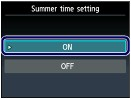
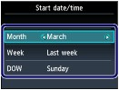
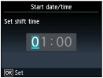
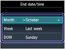
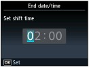

Setting Daylight Saving Time (Summer Time)
Setting Daylight Saving Time (Summer Time)Some countries adopt the daylight saving time (summer time) system that shifts the clock time forward at certain periods of the year.
You can set your machine to automatically change the time by registering the date and time that daylight saving time (summer time) begins and ends.
 Important Important
|
 Note Note
|
Display the Summer time setting screen.
(1) Press the Setup button.
(2) Select Device settings , and press the OK button.
(3) Select Device user settings, and press the OK button.
(4) Select Summer time setting, and press the OK button.
Enable summer time.
(1) Select ON to enable summer time.

To disable summer time, select OFF.
(2) Press the OK button.
Set the date and time that summer time starts.
(1) Select the month, week, and day of the week when summer time starts.
Use the  or
or  button to select the item to change, and use the
button to select the item to change, and use the  or
or  button to select an option.
button to select an option.

(2) Press the OK button.
(3) Use the or button to move the cursor under the desired position, and use the or button to enter the time (in 24-hour format) when summer time starts.
Precede single digits with a zero.

(4) Press the OK button.
The summer time start date/time will be set.
Set the date and time that summer time ends.
(1) Select the month, week, and day of the week when summer time ends.
Use the or button to select the item to change, and use the or button to select an option.

(2) Press the OK button.
(3) Use the or button to move the cursor under the desired position, and use the or button to enter the time (in 24-hour format) when summer time ends.
Precede single digits with a zero.

(4) Press the OK button.
The summer time end date/time will be set.
Press the FAX button to return to the fax standby screen.